Production Sound
Clean, broadcast-ready dialogue on set: mixing and boom operation for feature films, documentaries, network television, and commercial work.
From network broadcast for Good Morning America and ABC 20/20 to indie features and festival shorts, the goal is the same every day: dialogue that cuts together cleanly and needs no repair in post.
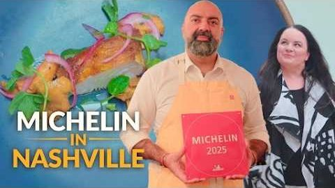
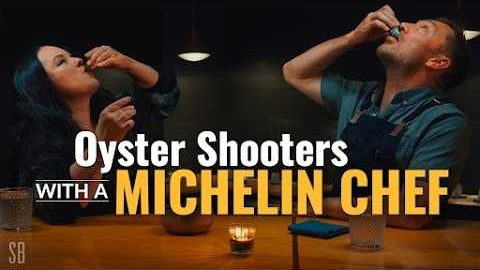
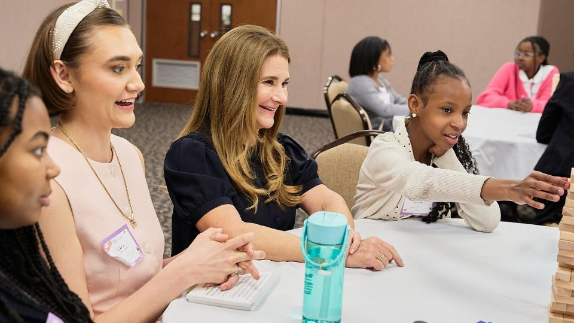
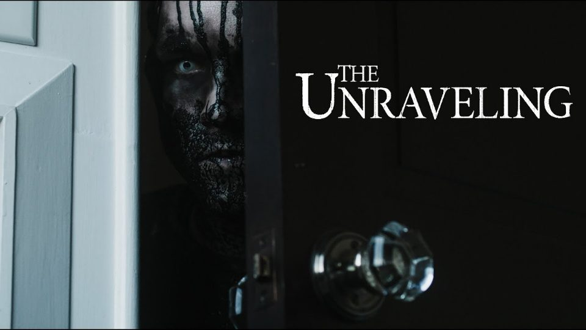
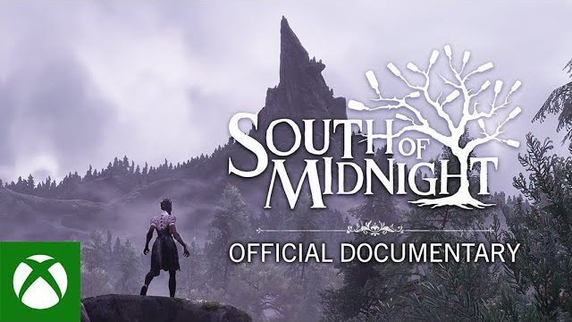
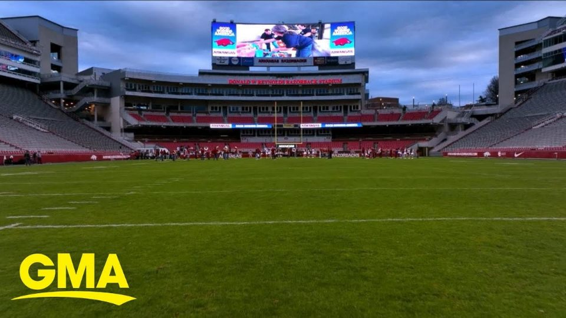
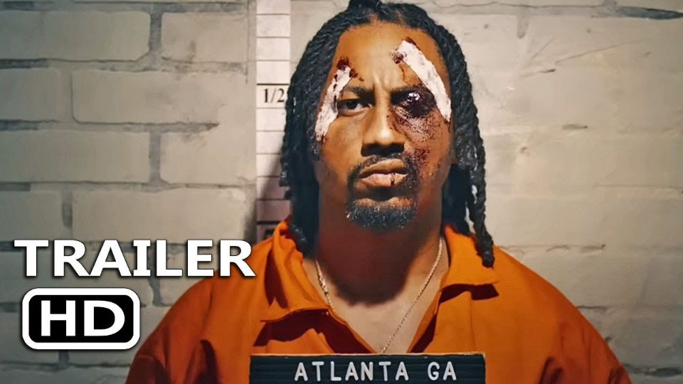
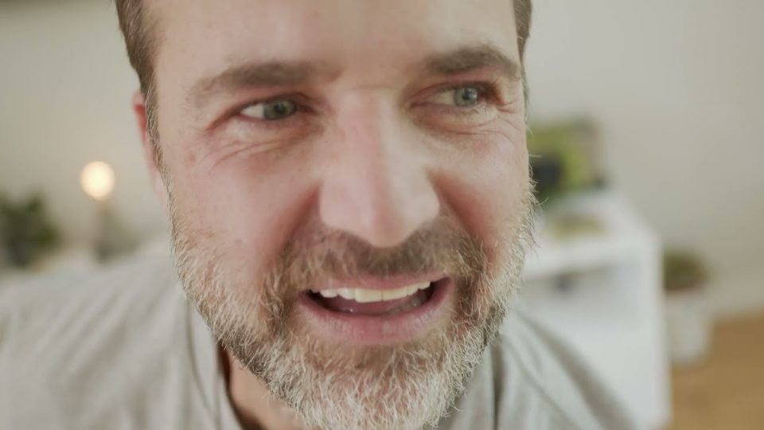
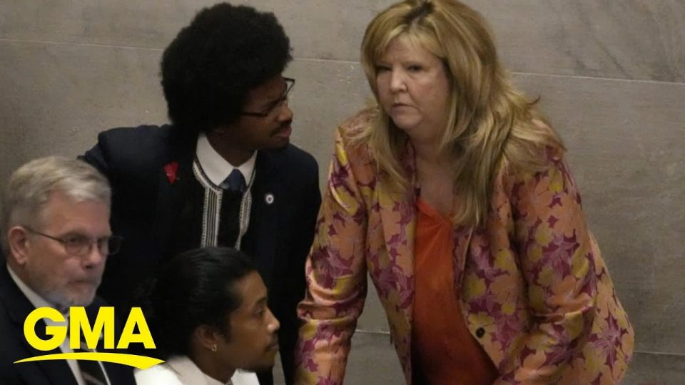
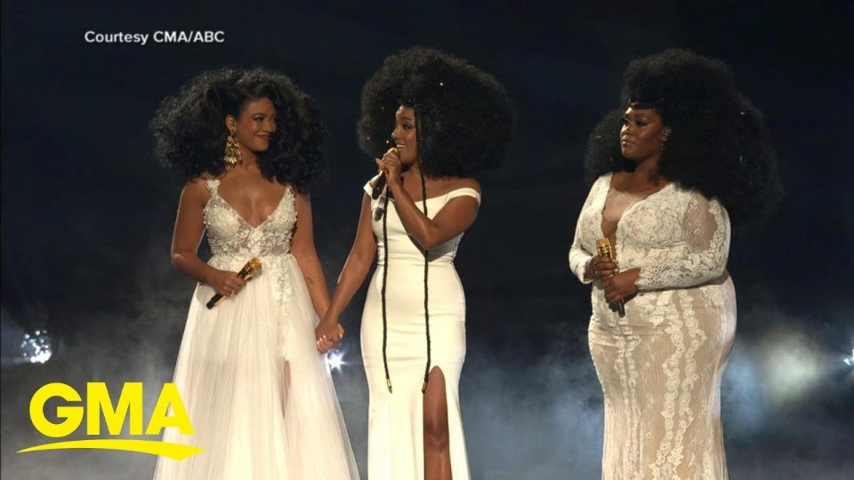
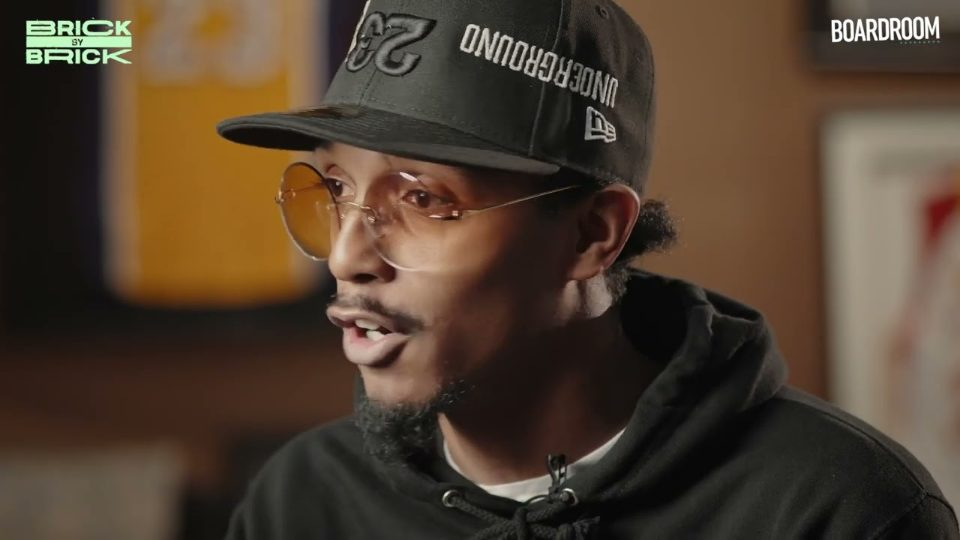
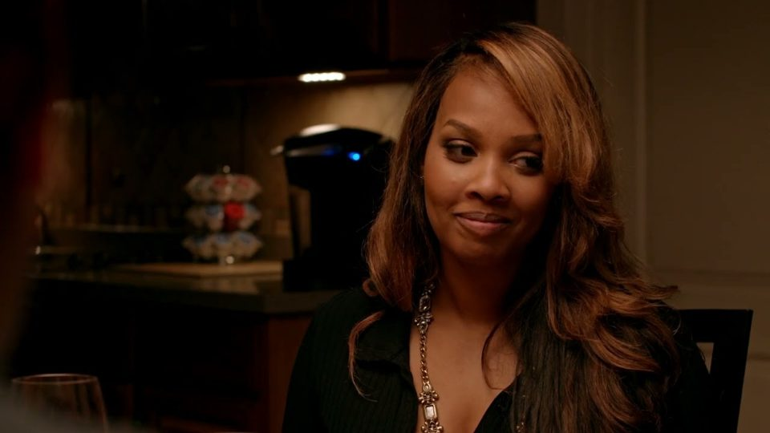
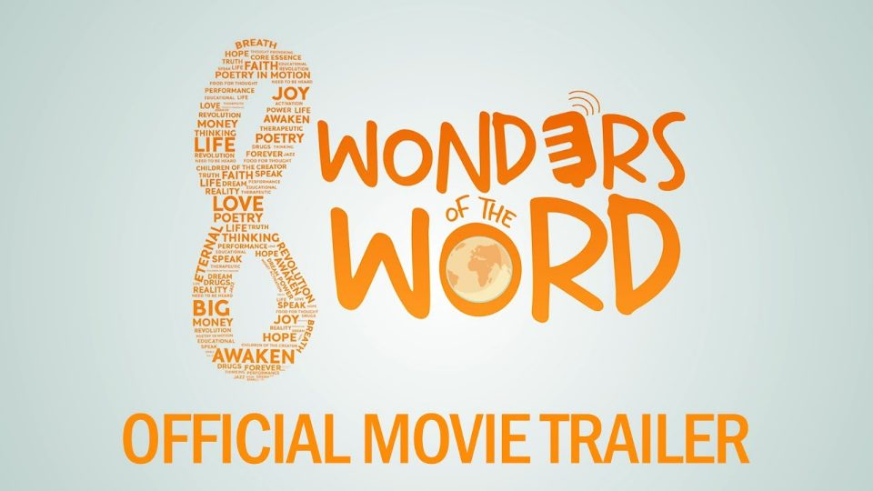
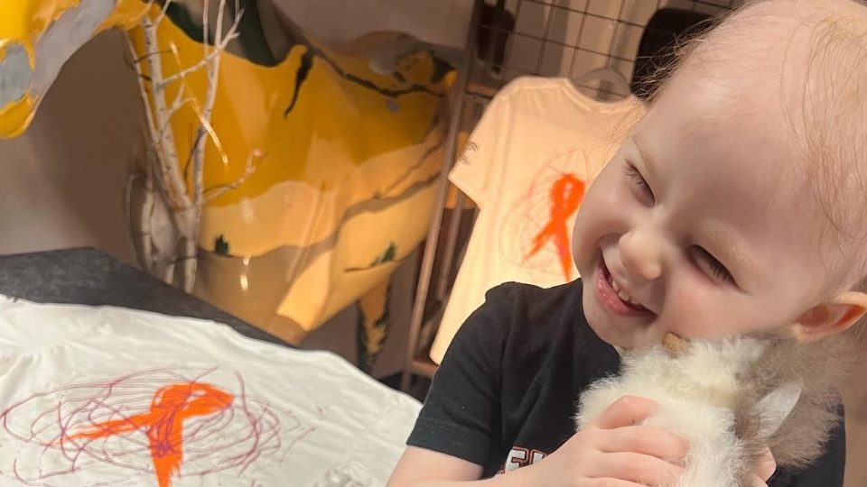
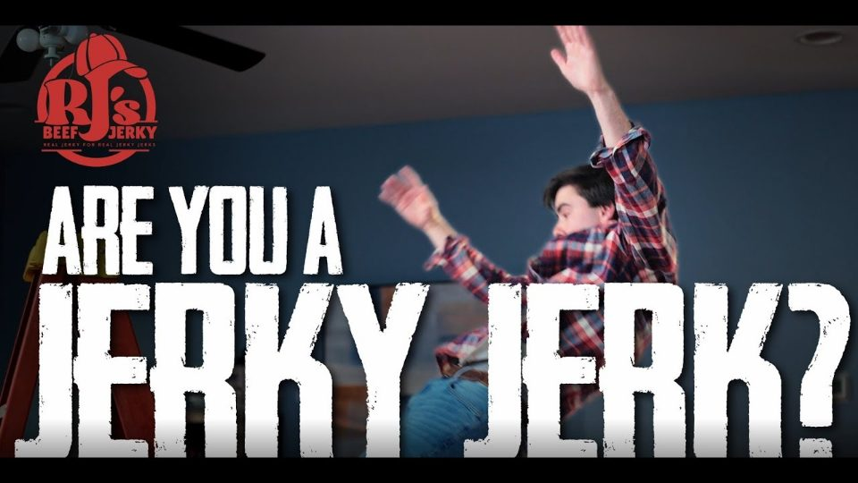
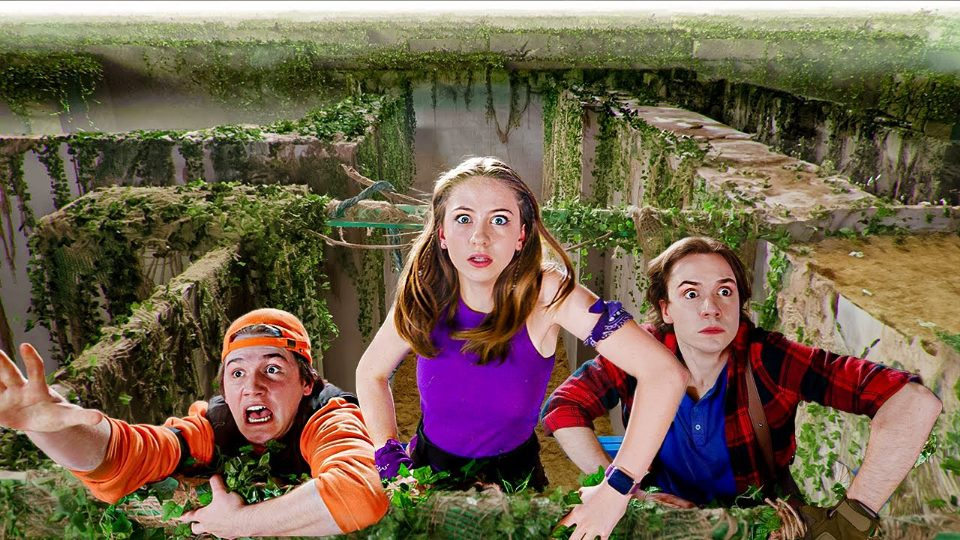
Full Credits
All roles: Sound Mixer & Boom Op unless notedFilm 12
- Crystal TalieferoInterview / Documentary2025
- Wall of DeathShort Film2025
- MORGXNDocumentary2025
- South of MidnightDocumentary2023
- Funny HowFeature Film2023
- Children Conquering Cancer: AveryDocumentary2022
- The UnravelingFeature Film2022
- Breakfast with EileenShort Film · 48 Hour Film Festival, 6 awards2022
- 8 Wonders of the WordDocumentary Film2021
- Trap City Part IIFeature Film2021
- One More DreamFeature Film2020
- Trap CityFeature Film2019
Television 4
- Pull Up A ChairMotus Studio2025
- Designing SpacesLifetime TV2025
- The Road Less Eaten, Ep. 2Outside TV2023
- Bloom TodayTV Series2020
Broadcast 5
- Turmoil in TennesseeGMA2023
- Lou WillBoardroom TV2022
- Rise and Shine, ArkansasGMA2021
- Lorenzen WrightABC 20/202021
- CMA Awards RecapGMA2021
Commercial 5
- Dangers of VapingOwlBear Media2025
- RJ's Beef JerkyMac N Cheese Media2025
- Cenvar SolarMac N Cheese Media2024
- Alexandra Kay × ArdenLemonlight2024
- Plungie PoolsLemonlight2023
Corporate 3
- Coca Cola ConferenceOwlBear Media2025
- Pepperdine UniversityKen Starr Institute2024
- Sam's Club Multi-Faith RoomLemonlight2023
Social 3
- Pivotal Ventures × Girls Inc.Social Media2025
- Escape the MazeShiloh & Bros.2024
- Nashville Instagram ReelsHGTV2022
Need sound on set? Let's talk.
Production sound mixing and boom operation for film, TV, documentary and commercial shoots.